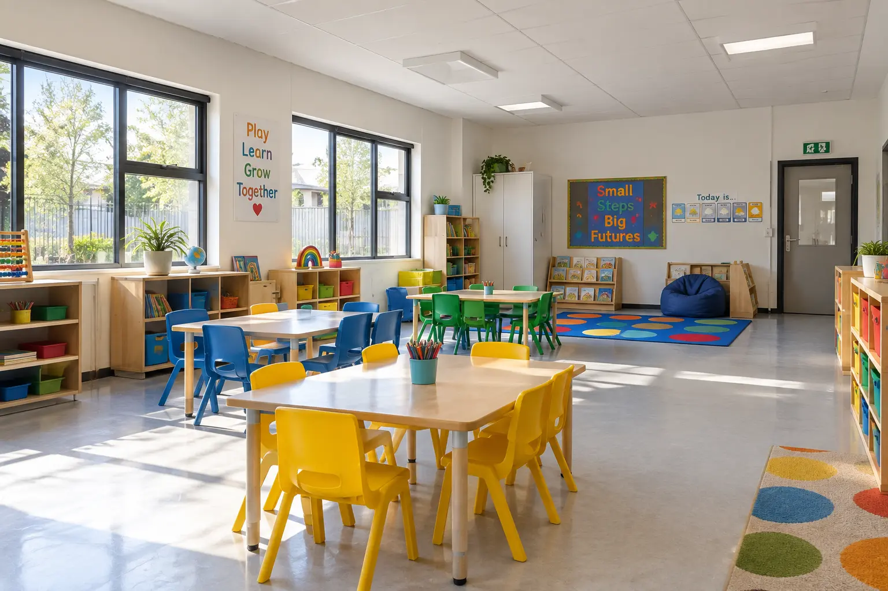

Schools, Creches, Preschools & Education Facilities
Pest control in an education setting requires more than a quick treatment. We plan around learners, staff, food areas and daily routines-helping Gauteng schools and childcare facilities deal with pest activity discreetly, responsibly and with minimal disruption.

Protecting more than the building
Young children explore floors, play areas and shared surfaces closely. That makes early detection, careful planning and good prevention especially important.
Cockroaches, rodents, flies and ants can move through kitchens, bathrooms, classrooms and storage areas, creating avoidable hygiene risks.
A pest sighting can alarm staff and parents before the extent of the problem is understood. Fast assessment and clear communication help the school respond calmly.
Waiting for visible activity often means treating during a busy term. Planned inspections allow work to be scheduled around quieter periods and school calendars.
Every area has a different risk
Food crumbs, bags, craft materials and busy storage areas can attract ants, cockroaches and occasional rodents.
Food preparation, dry goods and serving areas require close attention to harbourage, access points and cleaning-sensitive treatment placement.
Moisture, drains and pipe penetrations can support cockroaches, ants and flies or allow pests to move between rooms.
Sandpits, play equipment, gardens, refuse points and boundary areas are checked for ants, rodents and other activity.
Undisturbed supplies, paper, uniforms, sports equipment and clutter can provide shelter that allows a problem to remain unnoticed.
Rest areas, mattresses and upholstered items are inspected carefully when biting insects or unexplained marks are reported.
Planned for education environments
We choose the treatment approach according to the pest, location, occupants and conditions found-not a one-method-fits-all routine.
Where appropriate, work can be arranged after hours, over weekends or during school holidays to reduce disruption and simplify access.
Management receives practical instructions before treatment, including which rooms need preparation and when areas may be used again.
Treatment is focused on confirmed activity, harbourage and movement routes, with attention to keeping products away from unnecessary contact.
Service reports document findings, treated areas and recommendations so principals, owners or facility managers can track the response.
We identify practical improvements involving food storage, waste, moisture, clutter, proofing and reporting procedures.
A calm, organised response
We confirm the age groups on site, operating hours, reported activity, food areas, sensitive rooms and preferred service windows.
Our assessment looks beyond the sighting to entry points, nesting areas, food, water, waste and movement between indoor and outdoor zones.
Management receives the proposed scope, preparation requirements and access plan before treatment is carried out.
We record completed work, recommend preventative actions and schedule monitoring or follow-up where the pest or site conditions require it.
From isolated issues to ongoing protection
A small creche and a multi-building school campus do not face the same pressure. We scope the work around the actual property instead of forcing every facility into the same package.
Once-off targeted treatment for a defined pest issue in a specific area.
Scheduled preventative servicing for facilities needing regular inspection and monitoring.
Holiday-period treatment plans for more involved work while classrooms and activity areas are quieter.
Common education-facility pests
Common around kitchens, eating areas, bathrooms, drains, bins and classrooms where snacks are stored or eaten.
Often linked to refuse areas, food stores, roof spaces, gardens, boundary lines and gaps around doors or services.
Where biting insects or unusual activity are reported, we inspect first and recommend treatment based on confirmed evidence and location.
Questions from school and creche managers
Yes. We can plan suitable work around your operating hours, weekends or holiday periods, depending on the treatment required and access to the affected areas.
That depends on the pest, treatment method and areas involved. We define the required access and re-entry arrangements before service so management can plan correctly.
Preparation varies by pest and location. We provide clear instructions that may cover food storage, clearing selected cupboards, moving items from walls or restricting access to specific rooms.
Yes. We inspect the reported room and nearby risk areas to determine whether the issue is isolated or connected to a wider source before recommending the scope.
Yes. Reports record areas inspected or treated, relevant findings and recommendations that can be retained in the facility's maintenance records.
We can assist creches, preschools, primary and secondary schools, training facilities and other managed education properties within our Gauteng service area, subject to the site's requirements and location.
Other commercial facilities we support
Tell us what has been reported, which areas are affected and when your facility is available. We will help you plan the right next step.